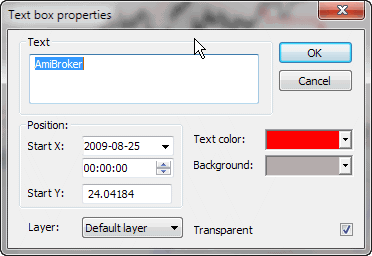

In the Text Box Properties window, you can change the text displayed in the box, select start coordinates, text and background colors, and transparency options.
The following fields are available:
The Text Box Properties window is accessible from the right-click menu. When you click on a text box with the right mouse button, the following menu appears:
Simply choose Properties to show the Text Box Properties window.
In the Text Box Properties window, you can change the text displayed in the box, select start coordinates, text and background colors, and transparency options.